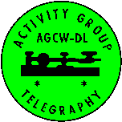

[Översättarens anmärkning: Information om att AGCW ECM är ansvarig för dessa websidor är utelämnad i den svenska översättningen.]
Medlemsskap i AGCW är öppet för alla telegrafivänner.
AGCW har nära relationer med den vanliga amatörradioklubben i tyskland -
DARC.